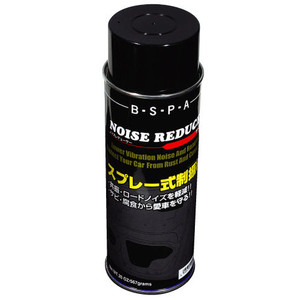
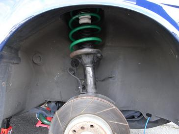
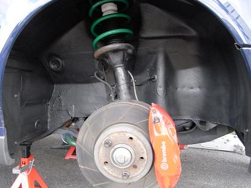

 （画像はメーカーHPから拝借）使用したのはビートソニックから発売されているノイズレデューサーだ。 基本的には、オーディオ用の防音・制振材なのだが、下回りの防錆にも使用できる。 この他に下回りの防錆材としての有名なノックスドールなどもあったが、乾燥に時間がかかるのと、どれを使えばよいのか説明を見てもいまいち良く分からなかった。 ノイズレデューサーはスプレー式だ。 |
  左が塗装前 右が塗装後 まず、汚れを落としていく。パーツクリーナーならばタイヤハウス１ヶ所につき１本はあったほうが良い。 錆が出かけてきている所を、ワイヤーブラシで軽くこすって錆を落とす。 次にブレーキ周りやストラット、リアはブレーキとストラットに加え、排気管周りにも新聞紙などでマスキングしておく。 ノイズレデューサーの成分はラバーゾールなので、ブチルゴムのように手につくとなかなか取れない。 臭いもそれなりにあるので、マスクと使い捨ての手袋をはめて作業すると良い。 ノイズレデューサーもタイヤハウス１ヶ所につき最低１本は必要だ。 事前準備が整ったところで塗装していく。コツとしては、普通の塗装のように30センチぐらい離して塗装するのではなく、 10センチぐらいの距離からベットリ塗っていく感じだ。 ３回ぐらいに分けて重ね塗りしていく。１回20分もあれば乾燥する。 タイヤハウスの他に、ウマをかけるフレーム部分なども同じように塗装しておいた。 インプレションとしては、ロードノイズが低減した。体感的にはノーマルが100とすれば塗装後は60ぐらいだろうか。高速道路のつなぎ目や雨の日に走ると良く分かる。 更に、Ｍゴロー号はハイグリップタイヤを履いていることもあり、小石を良く跳ね上るのだが、その音もあまり気にならなくなった。 これはなかなかオススメだ。 |